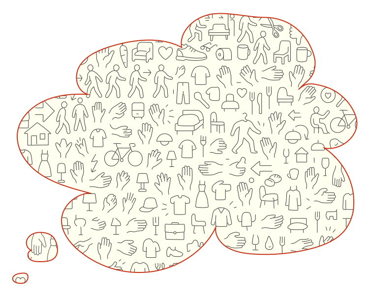
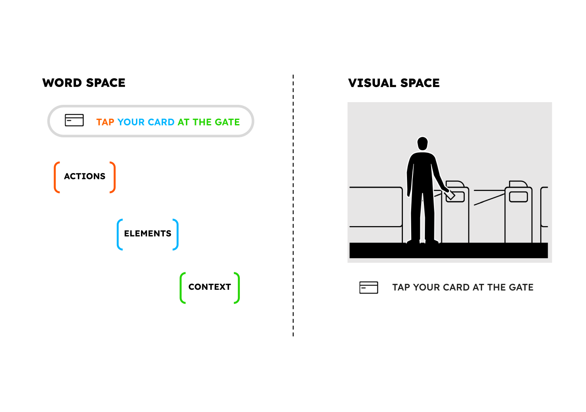
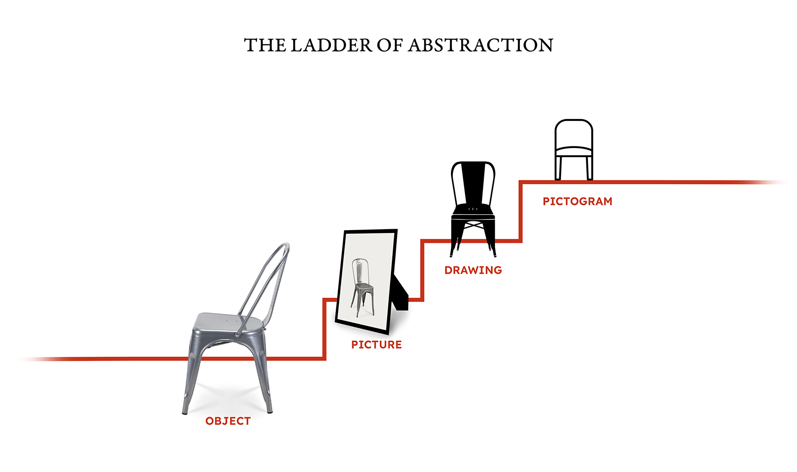
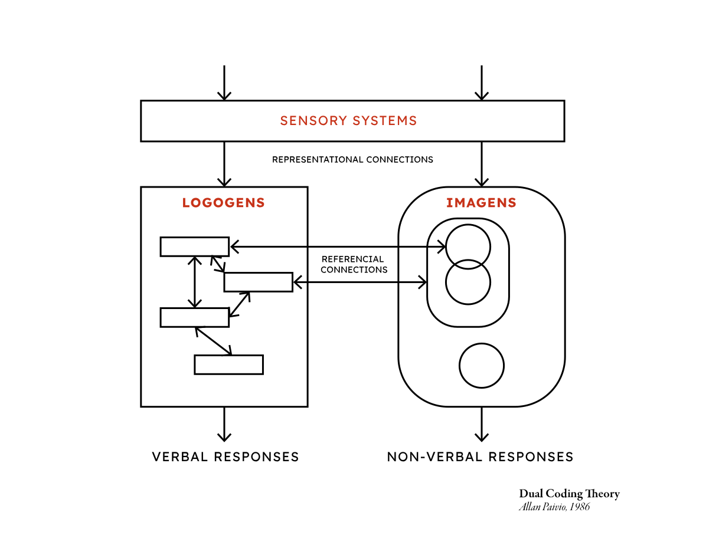
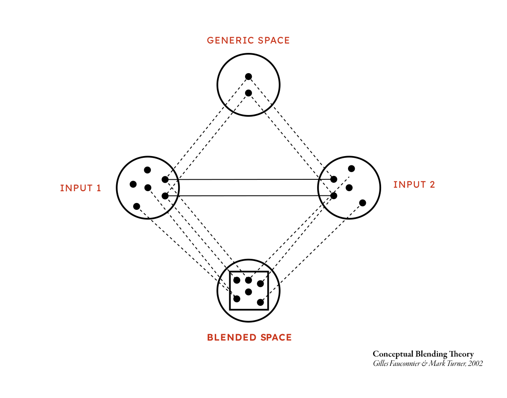
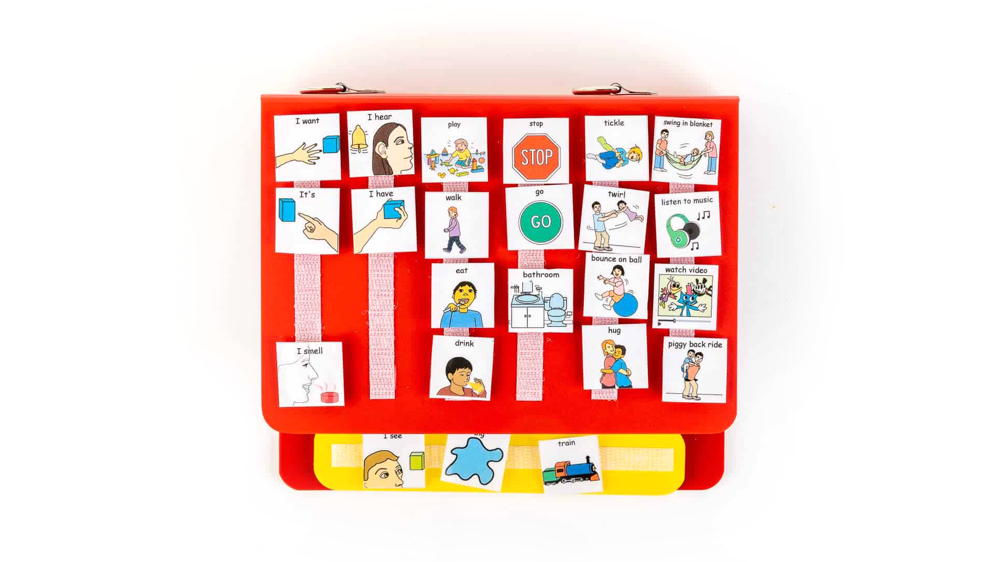
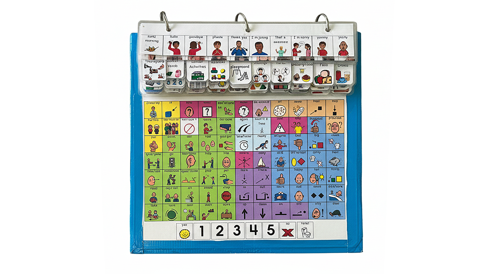
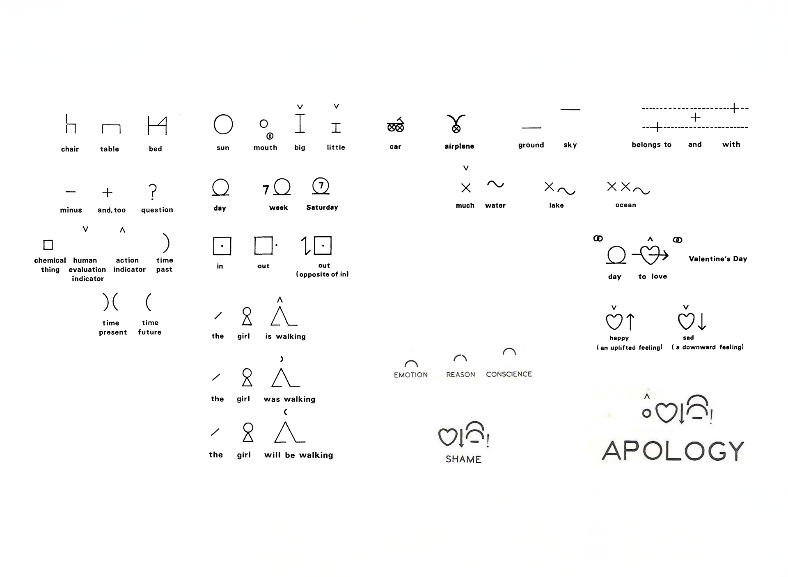

De la palabra
a la imagen accesible
Un sistema pictográfico generativo
para accesibilidad cognitiva

Una escena cotidiana
Una fonoaudióloga necesita explicar esto a un niño autista. Abre su biblioteca de pictogramas.
Encuentra "parque", "lluvia", "plasticina" por separado. Pero no puede componer la negación temporal ni la relación causal.
El dato global
Entre el 6% y el 10% de la población mundial tiene necesidades complejas de comunicación.
Esta escena se repite miles de veces al día en consultas, escuelas y hogares.
pictos.cl veinte años de práctica
Durante más de veinte años, pictos.cl ha desarrollado apoyos visuales y procedimentales para personas con discapacidad cognitiva: gramática visual para pictogramas, lenguaje claro, herramientas CAA.
Lección central: la relación entre palabra e imagen no puede ser arbitraria ni opaca; debe ser estrecha, trazable y comprensible.
La pregunta de investigación
¿Cómo diseñar herramientas generativas que hagan inspeccionable y controlable la construcción de pictogramas CAA?
El problema no es generar imágenes a partir de texto. DALL-E y Midjourney ya hacen eso. El problema es que operan como cajas negras. El camino de la frase al pictograma debe ser transparente en cada paso.
Parte 2
El problema del lenguaje visual
El sueño recurrente de un lenguaje universal
Leibniz (1666): Characteristica Universalis
Frege (1879): Begriffsschrift, semántica composicional
Neurath (s. XX): ISOTYPE, empirismo lógico visual
Bliss (1949): Blissymbolics, adoptado por la comunidad CAA

La paradoja universal–local
El significado no reside en la correspondencia entre palabras y objetos, sino en el uso dentro de formas de vida compartidas. — Ludwig Wittgenstein
Universales perceptuales
Efecto Bouba-Kiki: formas redondeadas → suave; angulosas → duro.
Evidencia empírica (entrevistas)
Los profesionales chilenos reemplazan pictogramas genéricos por fotografías personales: la consola del niño, su barrio, su abuela.
La universalidad podría alcanzarse no en las imágenes sino en la gramática que gobierna cómo se componen los conceptos visuales.
La escalera de la abstracción
Aprendemos anclados en lo concreto. Cada peldaño se conquista cuando la coordinación social lo requiere.
Codificación dual (Paivio): procesamos información verbal y visual por vías parcialmente distintas pero interconectadas. Cuando un concepto tiene representación en ambos canales, se recuerda y comprende mejor.
Para usuarios de CAA, el canal visual no es complemento sino vía principal de acceso al significado.


Un buen pictograma opera simultáneamente como representación icónica concreta, esquema funcional y activador de un marco semántico completo.
Metalenguaje Semántico Natural (NSM)
Wierzbicka y Goddard: 65 primitivos semánticos presentes en todas las lenguas humanas.
Parte 3
Cómo entendemos los pictogramas
La comprensión no es decodificación pasiva
Hallazgo central de 10 entrevistas con profesionales CAA en Chile:
1. Percepción
Componentes visuales discretos: formas, colores, disposiciones.
2. Activación semántica
Redes de asociaciones basadas en experiencia previa.
3. Filtrado contextual
El entorno desambigua: oso de peluche + cruz = "pediatra" en hospital.
4. Inferencia
Síntesis de elementos, asociaciones y contexto → significado.
Actos de habla decir es hacer
Austin y Searle: el lenguaje no solo describe el mundo; actúa sobre él.
Etiqueta
Referencial: "esto es agua"
Petición
Directiva: "quiero agua"
Instrucción
Procedimental: "lava con agua"
La primera pregunta no es "¿qué concepto?" sino "¿qué intención comunicativa?"
Semántica de marcos
Fillmore y FrameNet: las palabras evocan marcos conceptuales completos.
"Comprar" evoca: comprador, vendedor, mercancía, precio, dinero, transacción. No necesitamos mencionarlos todos.
Los roles semánticos (agente, paciente, instrumento, ubicación, meta) determinan la composición visual: quién hace qué, con qué, dónde.
Integración conceptual
Fauconnier y Turner: la mente crea significados nuevos mediante mezcla de espacios mentales.
Crear un pictograma combina:
significado lingüístico + convenciones visuales + contexto de uso + experiencia del usuario.
Hallazgo de entrevistas
Los profesionales combinan registros visuales intuitivamente: simplifican, exageran, eliminan, añaden. El desafío es hacer esto explícito, editable y reproducible.

¿Qué hace "bueno" a un pictograma?
Un buen pictograma se define por su éxito funcional, no por su estética.
| Polo A | Polo B | |
|---|---|---|
| Claridad | ↔ | Riqueza cultural |
| Consistencia sistémica | ↔ | Personalización |
| Universalidad | ↔ | Especificidad contextual |
| Simplicidad | ↔ | Completitud informativa |
Estas tensiones deben ser visibles y ajustables en cada etapa de construcción.
Parte 4
La brecha en la comunicación aumentativa
Comunicación Aumentativa y Alternativa hoy
PECS
Intercambio conductual de tarjetas. Estructura secuencial rígida.

Core Boards
Vocabulario nuclear en disposiciones espaciales fijas.

ARASAAC
Repositorio abierto. Amplia cobertura, pero colección estática.

La brecha
Ha avanzado
Síntesis y reconocimiento de habla. Sistemas predictivos. Interfaces corporalizadas (gestos, mirada).
No ha cambiado
Bibliotecas estáticas. Cobertura limitada. Sin adaptación al contexto. No existen sistemas pictográficos generativos dinámicos.
La IA generativa como material de diseño
No como solución automática sino como material de diseño.
Como un ceramista trabaja la arcilla: un material con propiedades y resistencias propias que se puede manipular con precisión.
El problema de la opacidad
DALL-E, Midjourney, Stable Diffusion: un solo paso opaco. No hay manera de inspeccionar qué entendió el sistema.
La IA para pictogramas debe ser inspectable, corregible, controlable.
Parte 5
PICTOS.net
La comprensión precede a la visualización
PICTOS.net: sistema de código abierto para la generación semántica de pictogramas.
Cada fase es independientemente visible, editable y regenerable.
Fase 1: COMPRENDER NLU + NSM
Descompone el enunciado con NSM + semántica de marcos + actos de habla.
El esquema nlu-schema v2.0 produce: dominio, marcos semánticos con roles,
tipo de acto de habla, explicaciones NSM, forma lógica, análisis pragmático, guías visuales.
{
"speech_act": "Explicación_y_Declaración",
"intent": "Explicar_cambio_de_plan",
"frames": [
{
"frame_name": "Causation",
"roles": {
"Cause": "hoy día llueve",
"Effect": "no iremos al parque"
}
},
{
"frame_name": "Activity_Cancellation",
"roles": {
"Activity": "Ir_al_parque",
"Agent": "YO_Y_OTROS"
}
},
{
"frame_name": "Performing_activity",
"roles": {
"Agent": "YO_Y_OTROS",
"Activity": "Trabajar_con_plastilina",
"Location": "AQUÍ_DENTRO"
}
}
],
"visual_guidelines": {
"focus_actor": "YO_Y_OTROS",
"action_core": "NO_IR_A_LUGAR_EXTERIOR",
"object_core": "PLASTILINA",
"context": "LLUVIA_EXTERIOR_E_INTERIOR"
}
}Explicaciones NSM del ejemplo
"porque hoy día llueve, no iremos al parque pero nos quedaremos trabajando con plastilina"
LLUEVE
AGUA CAER DE ARRIBA. MUCHO AGUA CAER POR UN TIEMPO. CUANDO ESTO PASA, NO ES BUENO PARA GENTE ESTAR FUERA.
PARQUE
UN LUGAR. ESTE LUGAR ESTAR FUERA. GENTE IR A ESTE LUGAR PARA HACER COSAS BUENAS, COMO MOVERSE MUCHO.
TRABAJAR CON PLASTILINA
YO Y OTROS HACER ALGO. ESTE ALGO ESTAR EN LAS MANOS. MOVER LAS MANOS PARA HACER FORMAS. HACER ESTO DENTRO.
NO IREMOS AL PARQUE
YO Y OTROS QUERER NO HACER ESTO: MOVERSE A ESTE LUGAR. PORQUE ALGO NO BUENO PASAR (llueve).
Fase 2: COMPONER Topología visual
Traduce el análisis semántico en una jerarquía de elementos visuales con articulación espacial.
Hace explícita una decisión invisible: qué es central, qué es periférico, qué relaciones espaciales expresan relaciones semánticas.
{
"id": "pictograma",
"children": [
{
"id": "zona_exterior_cancelada",
"children": [
{ "id": "nube_lluvia",
"children": [{ "id": "gotas_lluvia" }] },
{ "id": "parque_vacio",
"children": [
{ "id": "arbol" },
{ "id": "banco" }] },
{ "id": "simbolo_no_entrada" }
]
},
{
"id": "zona_interior_activa",
"children": [
{ "id": "mesa_trabajo" },
{ "id": "grupo_personas",
"children": [{ "id": "manos_moldeando" }] },
{ "id": "plastilina_material" }
]
}
]
}Fase 3: PRODUCIR Bitmap
Combina contexto semántico, elementos visuales y estilo para generar un PNG de 1024×1024 px.
El prompt describe la disposición de cada zona y las relaciones causa-efecto.
Aquí es donde la mayoría de los sistemas terminan. PICTOS.net considera la imagen como producto intermedio.

Pictograma generado por PICTOS.net
Fase 4: VECTORIZAR SVG bruto
Bitmap → SVG mediante vtracer (WebAssembly), ejecutado localmente en el navegador.
Proceso
Clustering jerárquico de color + ajuste de splines → trazados vectoriales limpios.
Resultado
SVG que preserva la apariencia visual pero carece de estructura semántica: trazados puramente geométricos.
Fase 5: ESTRUCTURAR SVG semántico
Reorganiza trazados en grupos semánticos con metadatos de accesibilidad (mf-svg-schema).
Lingüística
Enunciado y análisis
Conceptual
Marcos y roles
Estructural
Jerarquía visual
Visual
CSS y animaciones
Evaluativa
Calidad y accesibilidad
Pipeline completo
Cada fase es independientemente visible, editable y regenerable por el profesional.
Arquitectura técnica
| Frontend | React 19 + TypeScript 5.8 |
| Estado | Zustand |
| Almacenamiento | IndexedDB (local) |
| NLU + Imagen | Gemini API (2.5 Flash / 3 Pro) |
| Vectorización | vtracer WASM (local) |
| Auth | Netlify Identity |
| Idiomas | Español (LA) + Inglés (UK) |
Privacidad
Datos sensibles se procesan localmente. Diseñado para respetar la privacidad de usuarios y personas representadas.
Parte 6
Evaluación y calidad
ICAP Index of Cognitive Accessibility of Pictograms
¿Cómo sabemos si un pictograma generado es bueno?
Precisión semántica
¿Comunica exactamente lo que debe?
Claridad visual
¿Se identifica sin ambigüedad?
Facilidad de aprendizaje
¿Se recuerda tras primera exposición?
Dignidad
¿Respeta a la persona?
Adaptabilidad cultural
¿Funciona en el contexto del usuario?
Correspondencia semántico-visual
¿Estructura visual = estructura del significado?
De la evaluación al entrenamiento
Cada par "análisis semántico + pictograma validado" = dato de entrenamiento.
Este corpus está etiquetado con información semántica, pragmática, contextual y evaluativa, producida por profesionales expertos. Los JSON, SVG semánticos y evaluaciones ICAP constituyen un corpus sin precedentes para entrenar un modelo especializado.
Parte 7
Soberanía e invitación
El problema de la dependencia
IA generativa concentrada en pocas corporaciones. Modelos entrenados sin nuestros contextos.
Si queremos pictogramas para un niño chileno, necesitamos que el sistema entienda el contexto chileno. Para una persona mapuche, que respete ese marco cultural.
La soberanía tecnológica no es un eslogan político: es una necesidad práctica.
El ecosistema MediaFranca
IA para comunicación accesible como bien común: federado, abierto, comunitario.
PictoNet
Motor de generación semántica. Pipeline de 5 fases.
PictoForge
Co-diseño. Correcciones alimentan el modelo (RLHF).
MediaFranca
Plataforma federada. Instancias locales entrenan y comparten.
Esquemas abiertos: nlu-schema · mf-svg-schema · ICAP
Invitación a participar
PICTOS.net necesita usuarios reales para cumplir su propósito.
1. Usar la plataforma
Entrar a pictos.net, generar pictogramas reales. Cada generación, corrección y evaluación contribuye al corpus.
2. Contribuir bibliotecas
Colecciones existentes en formatos estructurados. Enriquecer la diversidad del sistema.
3. Retroalimentación
Evaluaciones ICAP, reportes, observaciones de uso. Datos que ningún dataset automatizado provee.
Cada disciplina contribuye
Diseñadores: composición visual, estilo, coherencia sistémica.
Psicólogos cognitivos: procesamiento visual, carga cognitiva, evaluación ICAP.
Fonoaudiólogos: uso clínico, casos reales, personalización contextual.
Lingüistas: análisis semántico, NSM, marcos conceptuales.
No se trata de reemplazar al profesional por una máquina, sino de darle una herramienta que amplíe sus capacidades sin ocultar sus decisiones.
La accesibilidad cognitiva es un derecho.
Las herramientas que la habilitan deberían ser un bien público.
pictos.net · pictos.cl · github
Herbert Spencer González · hspencer@ead.cl